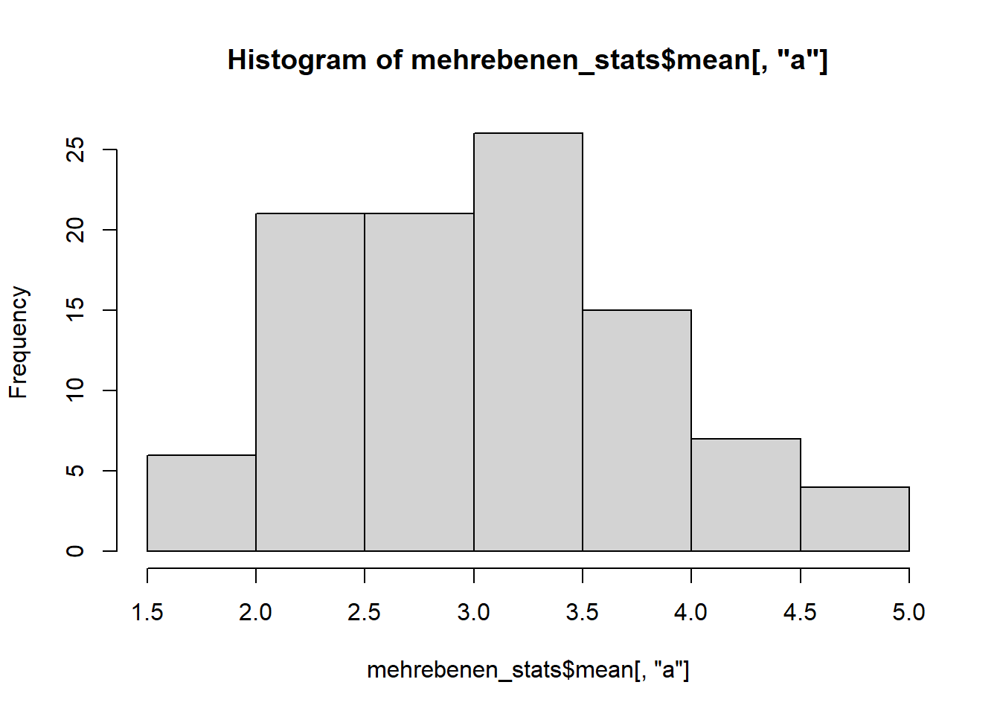
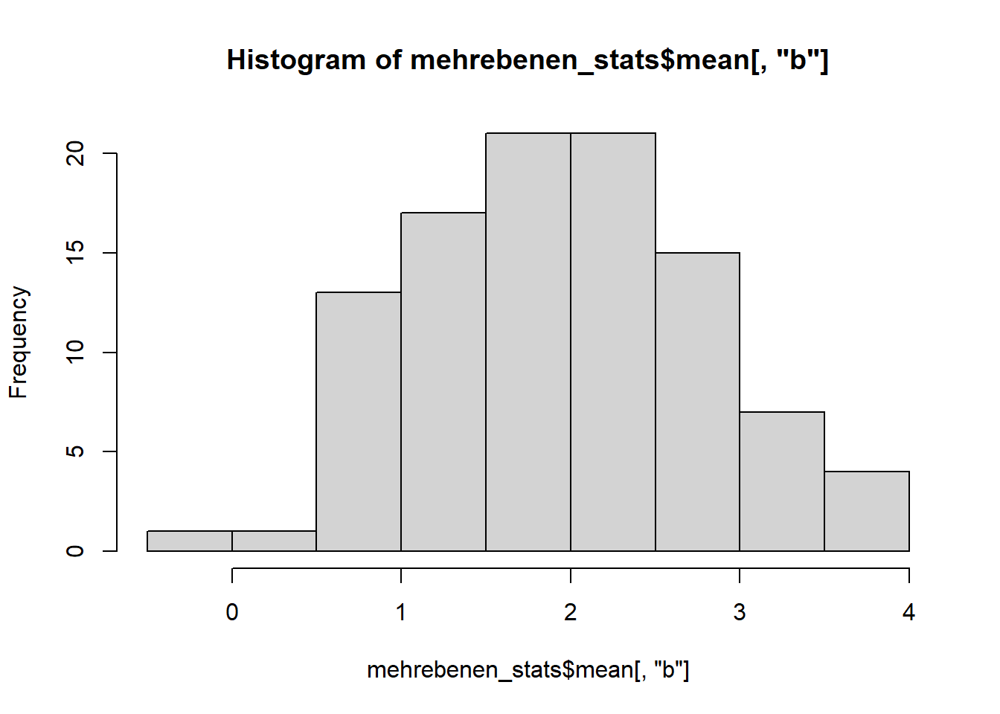
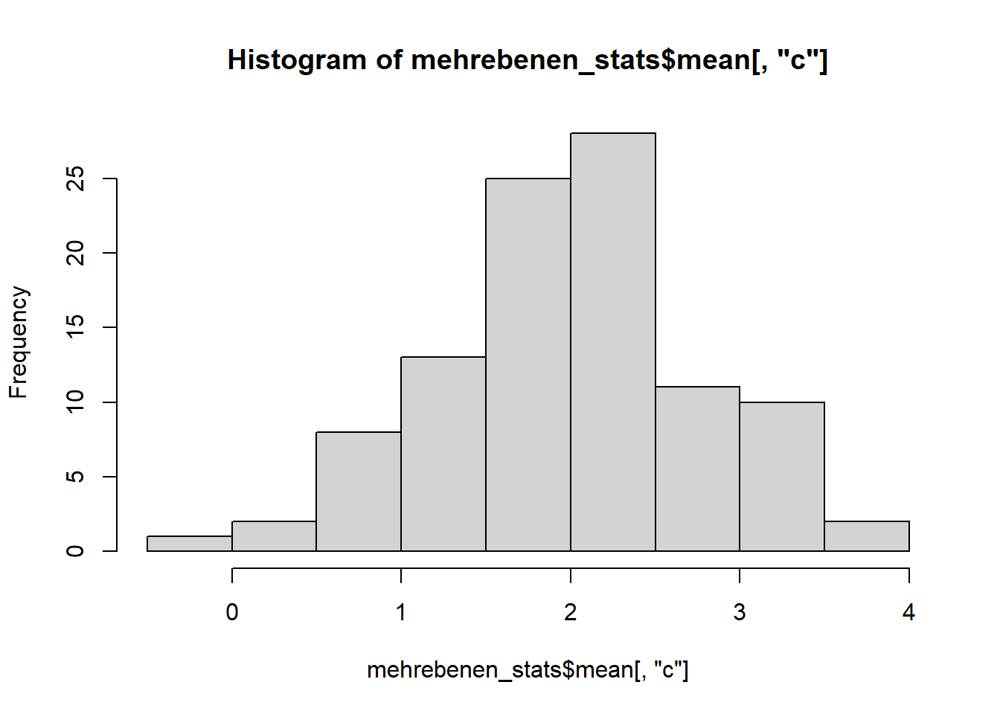

if (!require("pacman")) install.packages("pacman")Loading required package: pacmanpacman::p_load(haven, psych,
sjmisc, sjPlot, writexl, lavaan,
tidyverse, multilevelTools, franzpak)if (!require("pacman")) install.packages("pacman")Loading required package: pacmanpacman::p_load(haven, psych,
sjmisc, sjPlot, writexl, lavaan,
tidyverse, multilevelTools, franzpak)load("../data/df_cfa_long.RData")
head(df_cfa_long_scores)| id | time | a | b | c | a_dm | b_dm | c_dm | a_gm | b_gm | c_gm |
|---|---|---|---|---|---|---|---|---|---|---|
| 1 | 1 | 3.576438 | 2.0153094 | 3.059581 | -0.2566380 | 0.4476044 | -0.5267811 | 3.833076 | 1.567705 | 3.586362 |
| 1 | 2 | 3.618275 | 1.6847458 | 4.229828 | -0.2148012 | 0.1170408 | 0.6434662 | 3.833076 | 1.567705 | 3.586362 |
| 1 | 3 | 2.365406 | 0.3495072 | 2.465712 | -1.4676704 | -1.2181978 | -1.1206501 | 3.833076 | 1.567705 | 3.586362 |
| 1 | 4 | 3.604362 | 1.4354944 | 2.848375 | -0.2287140 | -0.1322106 | -0.7379871 | 3.833076 | 1.567705 | 3.586362 |
| 1 | 5 | 3.881178 | 1.2395786 | 3.159797 | 0.0481014 | -0.3281264 | -0.4265645 | 3.833076 | 1.567705 | 3.586362 |
| 1 | 6 | 4.172778 | 1.3404398 | 4.261824 | 0.3397012 | -0.2272652 | 0.6754625 | 3.833076 | 1.567705 | 3.586362 |
Schauen wir uns nochmal die Datenstruktur unserer aufbereiteten Datensätze aus dem vorhergehenden Kapitel an.
In df_cfa_long_scores haben wir haben die Variablen mit Fokus auf die Skalenscores:
head(df_cfa_long)| id | time | a1 | a2 | a3 | a4 | a5 | b1 | b2 | b3 | b4 | b5 | c1 | c2 | c3 |
|---|---|---|---|---|---|---|---|---|---|---|---|---|---|---|
| 1 | 1 | 3.336252 | 3.380463 | 3.223528 | 4.399347 | 3.542602 | 3.370896 | 1.697640 | 0.584167 | 1.576649 | 2.847195 | 4.325797 | 1.030847 | 3.822098 |
| 1 | 2 | 2.149828 | 5.110309 | 5.678413 | 2.765556 | 2.387270 | 2.486919 | 0.952220 | 2.101517 | 0.331000 | 2.552073 | 3.364003 | 5.711729 | 3.613752 |
| 1 | 3 | 1.613518 | 3.004133 | 2.503233 | 1.898476 | 2.807670 | 0.991958 | -0.685685 | 0.003147 | -0.517730 | 1.955846 | 2.582169 | 2.659834 | 2.155132 |
| 1 | 4 | 3.351085 | 3.852294 | 4.972103 | 2.612551 | 3.233779 | 2.248097 | 0.004118 | 0.711264 | 2.185949 | 2.028044 | 2.918614 | 3.163276 | 2.463234 |
| 1 | 5 | 3.320900 | 3.694431 | 4.703663 | 3.476859 | 4.210036 | 1.953658 | 0.675750 | 0.921623 | 0.284884 | 2.361978 | 2.829237 | 3.910432 | 2.739723 |
| 1 | 6 | 4.173775 | 5.658948 | 3.273027 | 4.192700 | 3.565438 | 1.544111 | -0.373186 | 1.303905 | 1.687402 | 2.539967 | 4.141474 | 5.234767 | 3.409232 |
In df_cfa_long haben wir die einzelnen Item abgespeichert.
Die Reliabilitätsanalyse basiert auf den Items, nicht auf den Skalenwerten (df_cfa_long). Bei täglich erhobenen Skalen nehmen wir die omegaSEM() Funktion. Als erstes Argument geben wir die Items in einem Character-Vector mittels c(), die Items werden mit Anführungszeichen angegeben. Falls ihr die Itemnamen nicht wisst, könnt ihr sie mit names(df_cfa_long) nachsehen.
scalea_reliab <- omegaSEM(
items = c("a1", "a2", "a3", "a4", "a5"),
id = "id",
data = df_cfa_long)
scalea_reliab$Results| label | est | ci.lower | ci.upper | |
|---|---|---|---|---|
| 37 | omega_within | 0.7390197 | 0.7120811 | 0.7659583 |
| 40 | omega_between | 0.8480600 | 0.7955222 | 0.9005978 |
Hier erscheint teils eine Warnung, weil nicht alle Personen (cluster) Varianz auf den Items haben. Dies können wir ignorieren. In den simulierten Daten, die wir verwenden, ist dies jedoch nicht der Fall. Dann können wir den Output ansehen. Omega_within gibt die Reliabilität für Unterschiede innerhalb der Person an, und Omega_between gibt die Reliabilität für Unterschiede zwischen Personen an. Die Reliabilitäten sollten über .70 liegen für eine gute Reliabilität auf beiden Leveln.
scaleb_reliab <- omegaSEM(
items = c("b1", "b2", "b3", "b4", "b5"),
id = "id",
data = df_cfa_long)
scaleb_reliab$Results| label | est | ci.lower | ci.upper | |
|---|---|---|---|---|
| 37 | omega_within | 0.7439953 | 0.7175657 | 0.7704249 |
| 40 | omega_between | 0.8884158 | 0.8502345 | 0.9265970 |
scalec_reliab <- omegaSEM(
items = c("c1", "c2", "c3"),
id = "id",
data = df_cfa_long)
scalec_reliab$Results| label | est | ci.lower | ci.upper | |
|---|---|---|---|---|
| 25 | omega_within | 0.6276555 | 0.5854891 | 0.6698219 |
| 28 | omega_between | 0.7638948 | 0.6728234 | 0.8549662 |
In quantitativ-empirischen psychologischen Artikeln ist (fast) immer die Korrelationstabelle die erste Tabelle des Artikels. Unser nächstes Ziel ist es, eine Korrelationstabelle anzufertigen, in der wir die a) Mittelwerte, b) Standardabweichungen, c) ICC (Anteile der Zwischen-Person Varianz) und Korrelationen Zwischen und Innerhalb von Personen integrieren.
Die Funktion cortable_multilevel() berechnet und stellt diese Angaben für uns zusammen. Sie nimmt die Argumente varnames mit den Variablennamen als Vektor c("a", "b", "c") und die Gruppierungsvariable, die angibt zu welcher Level-2 Einheit eine Beobachtung/Zeile gehört (grp = "id").
cortable_integriert <- cortable_multilevel(df_cfa_long_scores,
varnames = c("a", "b", "c"),
grp = "id")
cortable_integriert| Variable | M | SD | ICC | 1. | 2. | 3. |
|---|---|---|---|---|---|---|
| 1.a | 3.03 | 0.99 | .49 | - | .32** | .39*** |
| 2.b | 1.95 | 1.07 | .55 | .22*** | - | .29** |
| 3.c | 1.99 | 1.06 | .47 | .25*** | .29*** | - |
Betrachten wir nun die einzelnen Elemente der Korrelationstabelle:
Wir exportieren die Korrelationstabelle nach Excel mittels write_xlsx().
# eval: false
write_xlsx(cortable_integriert, path = "korrelationstabelle.xlsx")Die Excel-Tabelle lässt sich dann in Word kopieren und weiter verarbeitet werden, z.B. mit den richtigen Variablennamen versehen werden etc. Damit haben wir nun die Datenaufbereitung und deskriptive Datenanalyse abgeschlossen.
Wendet diese Schritte nun auf den Datensatz aus der letzten Übung an. Zunächst laden wir die Daten, die in der letzten Übung abgespeichert werden sollten.
Wir haben die beiden Datensätze df_uebung_lang für alle Items (x1-x5, y1-y5) im langen Datenformat und df_uebung_lang_scores für alle Skalenwerte (x,y) im Langformat.
load("../data/df_uebung.RData")
head(df_uebung_lang)| id | time | x1 | x2 | x3 | x4 | x5 | y1 | y2 | y3 | y4 | y5 |
|---|---|---|---|---|---|---|---|---|---|---|---|
| 1 | 1 | 4.927017 | 3.569244 | 3.123268 | 5.759150 | 4.700258 | 4.329297 | 4.477198 | 2.848577 | 4.678402 | 3.480544 |
| 1 | 2 | 3.484359 | 3.716360 | 2.200183 | 4.865658 | 3.579269 | 3.597471 | 4.454955 | 5.551165 | 4.682683 | 3.221823 |
| 1 | 3 | 5.209319 | 4.025572 | 2.416466 | 5.106690 | 5.881804 | 3.552542 | 4.760682 | 3.769263 | 3.607138 | 3.853132 |
| 1 | 4 | 3.777327 | 2.601702 | 2.600930 | 4.142291 | 4.111085 | 3.052100 | 3.288172 | 3.649328 | 4.363976 | 3.120772 |
| 1 | 5 | 2.822955 | 4.917407 | 2.179303 | 4.984553 | 4.600078 | 2.592308 | 5.678996 | 2.271035 | 3.401883 | 3.842651 |
| 1 | 6 | 2.874990 | 4.417907 | 3.370835 | 4.902819 | 4.055922 | 3.082656 | 4.679951 | 5.264214 | 5.139966 | 2.815425 |
head(df_uebung_lang_scores)| id | time | x | y | x_dm | y_dm | x_gm | y_gm |
|---|---|---|---|---|---|---|---|
| 1 | 1 | 4.415787 | 3.962804 | 0.3959958 | 0.1601657 | 4.019792 | 3.802638 |
| 1 | 2 | 3.569166 | 4.301619 | -0.4506258 | 0.4989815 | 4.019792 | 3.802638 |
| 1 | 3 | 4.527970 | 3.908551 | 0.5081786 | 0.1059135 | 4.019792 | 3.802638 |
| 1 | 4 | 3.446667 | 3.494870 | -0.5731246 | -0.3077683 | 4.019792 | 3.802638 |
| 1 | 5 | 3.900859 | 3.557375 | -0.1189324 | -0.2452633 | 4.019792 | 3.802638 |
| 1 | 6 | 3.924495 | 4.196442 | -0.0952970 | 0.3938045 | 4.019792 | 3.802638 |
head(df_uebung_lang_scores)| id | time | x | y | x_dm | y_dm | x_gm | y_gm |
|---|---|---|---|---|---|---|---|
| 1 | 1 | 4.415787 | 3.962804 | 0.3959958 | 0.1601657 | 4.019792 | 3.802638 |
| 1 | 2 | 3.569166 | 4.301619 | -0.4506258 | 0.4989815 | 4.019792 | 3.802638 |
| 1 | 3 | 4.527970 | 3.908551 | 0.5081786 | 0.1059135 | 4.019792 | 3.802638 |
| 1 | 4 | 3.446667 | 3.494870 | -0.5731246 | -0.3077683 | 4.019792 | 3.802638 |
| 1 | 5 | 3.900859 | 3.557375 | -0.1189324 | -0.2452633 | 4.019792 | 3.802638 |
| 1 | 6 | 3.924495 | 4.196442 | -0.0952970 | 0.3938045 | 4.019792 | 3.802638 |
Berechnet die Omega-Within und Omega-Between Reliabilitäten für X und Y mittels omegaSEM() und analysiert die Angaben. Passt dazu den Code aus dem Abschnitt ‘Reliabilitätsanalyse’ oben auf das Beispiel an.
scalex_reliab <- omegaSEM(c("x1", "x2", "x3", "x4", "x5"), "id", df_uebung_lang)
scalex_reliab$Results| label | est | ci.lower | ci.upper | |
|---|---|---|---|---|
| 37 | omega_within | 0.7207950 | 0.6919658 | 0.7496242 |
| 40 | omega_between | 0.8765599 | 0.8338797 | 0.9192402 |
scaley_reliab <- omegaSEM(c("y1", "y2", "y3", "y4", "y5"), "id", df_uebung_lang)
scaley_reliab$Results| label | est | ci.lower | ci.upper | |
|---|---|---|---|---|
| 37 | omega_within | 0.3624754 | 0.2969399 | 0.4280109 |
| 40 | omega_between | 0.8844411 | 0.8452834 | 0.9235988 |
Berechnet den ICC für X und Y mittels cortable_multilevel() und analysiert die Angaben. Passt dazu den Code aus dem Abschnitt ‘Korrelationstabelle’ oben auf das Beispiel an.
mehrebenen_stats <- df_uebung_lang_scores |>
cortable_multilevel(varnames = c("x", "y"), grp = "id")
print(mehrebenen_stats)# A tibble: 2 × 6
Variable M SD ICC `1.` `2.`
<chr> <chr> <chr> <chr> <chr> <chr>
1 1.x 3.04 0.99 .53 - .28**
2 2.y 2.05 0.93 .69 .02 - Beide Variablen haben einen ICC unter .80, unserer Faustregel, d.h. 20% oder mehr Varianz liegt auf der Inner-Person Ebene. Somit weisen sie genügend Varianz auf Inner-Person-Ebene aus und eine Mehrebenen-Analyse ist möglich. X scheint mehr Varianz auf Inner-Person zu haben (ICC: .53; Varianz auf Inner-Person-Ebene ist 1-ICC, also .47 oder 47%) als Y (31%).
Die Korrelation zwischen X und Y beträgt r = .28 und ist signifikant. Die Reliabilität auf Level-2/ Zwischen-Person Ebene, durch omega_between angegeben, ist für X und Y gut (> .80). Die ICCs weisen auf ausreichend Varianz auf Zwischen-Person Ebene hin (53%-69%). Daher ist sie sinnvoll zu interpretieren. DIe Variablen sind moderat positiv miteinander assoziiert.
Für Y, auch wenn es durchaus Varianz auf Inner-Person Ebene gibt (ICC = .69, damit sind 31% der Varianz auf Inner-Person Ebene), ist auf Inner-Person Ebene ist die Reliabilität sehr niedrig (Omega-within = .32). Das heisst, dass die Varianz innerhalb der Personen über die Tage auf Variable Y nicht reliabel gemessen werden. Die Inner-Person Varianz auf Y ist somit nicht sinnvoll zu interpretieren und stellt vermutlich nur “Rauschen” dar. Die Korrelation mit X ist nicht sinnvoll zu interpretieren (und fällt auch nicht signifikant aus), auch wenn X sowohl ausreichend Level-1 Varianz hat als auch reliabel gemessen ist.
Die folgenden Analysen sind optional, geben aber ein tieferes Verständnis des Materials.
Für eine genauere Auswertung können wir omegaSEM() mit dem Parameter savemodel = TRUE laufen lassen und uns mittels summary() die konfirmatorische Faktoranalyse (CFA) genauer ansehen.
Wie CFAs funktionieren, kann hier repetiert werden: Statistik IV - Methodenlehre
Zudem können wir uns mit lavInspect() die Modellparameter ansehen, um zu verstehen wie die Reliabilitätskoeffizient gebildet wird.
scalec_reliab <- omegaSEM(c("c1", "c2", "c3"), "id", df_cfa_long, savemodel = TRUE)
scalec_reliab$Fit |> summary(fit = TRUE, stand = TRUE)lavaan 0.6-19 ended normally after 32 iterations
Estimator ML
Optimization method NLMINB
Number of model parameters 15
Row rank of the constraints matrix 6
Number of observations 1000
Number of clusters [id] 100
Model Test User Model:
Test statistic 0.000
Degrees of freedom 0
Model Test Baseline Model:
Test statistic 383.809
Degrees of freedom 6
P-value 0.000
User Model versus Baseline Model:
Comparative Fit Index (CFI) 1.000
Tucker-Lewis Index (TLI) 1.000
Loglikelihood and Information Criteria:
Loglikelihood user model (H0) -4446.130
Loglikelihood unrestricted model (H1) -4446.130
Akaike (AIC) 8922.260
Bayesian (BIC) 8995.876
Sample-size adjusted Bayesian (SABIC) 8948.235
Root Mean Square Error of Approximation:
RMSEA 0.000
90 Percent confidence interval - lower 0.000
90 Percent confidence interval - upper 0.000
P-value H_0: RMSEA <= 0.050 NA
P-value H_0: RMSEA >= 0.080 NA
Standardized Root Mean Square Residual (corr metric):
SRMR (within covariance matrix) 0.000
SRMR (between covariance matrix) 0.000
Parameter Estimates:
Standard errors Standard
Information Observed
Observed information based on Hessian
Level 1 [within]:
Latent Variables:
Estimate Std.Err z-value P(>|z|) Std.lv Std.all
f_within =~
c1 (wl1) 0.596 0.043 13.816 0.000 0.596 0.595
c2 (wl2) 0.653 0.046 14.176 0.000 0.653 0.622
c3 (wl3) 0.587 0.043 13.605 0.000 0.587 0.580
Variances:
Estimate Std.Err z-value P(>|z|) Std.lv Std.all
f_within 1.000 1.000 1.000
.c1 (wr1) 0.648 0.048 13.564 0.000 0.648 0.645
.c2 (wr2) 0.675 0.054 12.435 0.000 0.675 0.613
.c3 (wr3) 0.677 0.048 14.183 0.000 0.677 0.663
Level 2 [id]:
Latent Variables:
Estimate Std.Err z-value P(>|z|) Std.lv Std.all
f_between =~
c1 (bl1) 0.529 0.095 5.569 0.000 0.529 0.660
c2 (bl2) 0.704 0.106 6.614 0.000 0.704 0.803
c3 (bl3) 0.680 0.115 5.905 0.000 0.680 0.694
Intercepts:
Estimate Std.Err z-value P(>|z|) Std.lv Std.all
.c1 2.003 0.086 23.253 0.000 2.003 2.500
.c2 1.948 0.094 20.798 0.000 1.948 2.224
.c3 2.021 0.103 19.615 0.000 2.021 2.063
Variances:
Estimate Std.Err z-value P(>|z|) Std.lv Std.all
f_betwen 1.000 1.000 1.000
.c1 (br1) 0.362 0.081 4.446 0.000 0.362 0.564
.c2 (br2) 0.272 0.107 2.536 0.011 0.272 0.355
.c3 (br3) 0.497 0.120 4.132 0.000 0.497 0.518
Defined Parameters:
Estimate Std.Err z-value P(>|z|) Std.lv Std.all
num_within 3.371 0.262 12.875 0.000 3.371 3.233
denom_within 5.370 0.253 21.213 0.000 5.370 5.155
omega_within 0.628 0.022 29.174 0.000 0.628 0.627
num_between 3.659 0.764 4.787 0.000 3.659 4.657
denom_between 4.789 0.754 6.354 0.000 4.789 6.094
omega_between 0.764 0.046 16.440 0.000 0.764 0.764lavInspect(scalec_reliab$Fit, "list") |>
select(lhs, op, rhs, free, level, free, label, est, se) |>
mutate(across(where(is.numeric), round, 2)) # alternatively, parTable()Warning: There was 1 warning in `mutate()`.
ℹ In argument: `across(where(is.numeric), round, 2)`.
Caused by warning:
! The `...` argument of `across()` is deprecated as of dplyr 1.1.0.
Supply arguments directly to `.fns` through an anonymous function instead.
# Previously
across(a:b, mean, na.rm = TRUE)
# Now
across(a:b, \(x) mean(x, na.rm = TRUE))| lhs | op | rhs | free | level | label | est | se |
|---|---|---|---|---|---|---|---|
| f_within | =~ | c1 | 1 | 1 | wl1 | 0.60 | 0.04 |
| f_within | =~ | c2 | 2 | 1 | wl2 | 0.65 | 0.05 |
| f_within | =~ | c3 | 3 | 1 | wl3 | 0.59 | 0.04 |
| f_within | ~~ | f_within | 0 | 1 | 1.00 | 0.00 | |
| c1 | ~~ | c1 | 4 | 1 | wr1 | 0.65 | 0.05 |
| c2 | ~~ | c2 | 5 | 1 | wr2 | 0.68 | 0.05 |
| c3 | ~~ | c3 | 6 | 1 | wr3 | 0.68 | 0.05 |
| c1 | ~1 | 0 | 1 | 0.00 | 0.00 | ||
| c2 | ~1 | 0 | 1 | 0.00 | 0.00 | ||
| c3 | ~1 | 0 | 1 | 0.00 | 0.00 | ||
| f_within | ~1 | 0 | 1 | 0.00 | 0.00 | ||
| f_between | =~ | c1 | 7 | 2 | bl1 | 0.53 | 0.10 |
| f_between | =~ | c2 | 8 | 2 | bl2 | 0.70 | 0.11 |
| f_between | =~ | c3 | 9 | 2 | bl3 | 0.68 | 0.12 |
| f_between | ~~ | f_between | 0 | 2 | 1.00 | 0.00 | |
| c1 | ~~ | c1 | 10 | 2 | br1 | 0.36 | 0.08 |
| c2 | ~~ | c2 | 11 | 2 | br2 | 0.27 | 0.11 |
| c3 | ~~ | c3 | 12 | 2 | br3 | 0.50 | 0.12 |
| c1 | ~1 | 13 | 2 | 2.00 | 0.09 | ||
| c2 | ~1 | 14 | 2 | 1.95 | 0.09 | ||
| c3 | ~1 | 15 | 2 | 2.02 | 0.10 | ||
| f_between | ~1 | 0 | 2 | 0.00 | 0.00 | ||
| num_within | := | (wl1+wl2+wl3)^2 | 0 | 0 | num_within | 3.37 | 0.26 |
| denom_within | := | (wl1+wl2+wl3)^2+(wr1+wr2+wr3) | 0 | 0 | denom_within | 5.37 | 0.25 |
| omega_within | := | num_within/denom_within | 0 | 0 | omega_within | 0.63 | 0.02 |
| num_between | := | (bl1+bl2+bl3)^2 | 0 | 0 | num_between | 3.66 | 0.76 |
| denom_between | := | (bl1+bl2+bl3)^2+(br1+br2+br3) | 0 | 0 | denom_between | 4.79 | 0.75 |
| omega_between | := | num_between/denom_between | 0 | 0 | omega_between | 0.76 | 0.05 |
Wie der Output zeigt, ergibt sich die Omega-Reliabilität aus dem Anteil der durch den Faktor (f_within für den Faktor auf Level-1 bzw. f_between für den Faktor auf Level-2) erklärten Varianz der Items (Summe aller Item-Ladungen, quadriert für Varianz) geteilt durch die Gesamtvarianz der Items (durch Faktor erklärte Varianz der Items + Residualvarianz, d.h. übrigbleibende Varianz der Items). Diese Formel wird pro Varianzebene (Level-1, also tägliche Schwankungen innerhalb der Person) und Level-2 (Unterschiede zwischen Personen) getrennt berechnet.
Uns interessiert wie gross der Anteil der Varianz ist, der jeweils auf die zwei Ebenen der Daten entfallen (Inner-Person, Zwischen-Person-Ebene). Dies kann uns der ICC angeben. Mittels der Funktion statsBy() bekommen wir einige Analysen zu unseren Mehrebenen-Daten geliefert. Die Funktion benötigt zwei Argumente: den Datensatz und und die Gruppierungsvariable. Wir wählen entsprechend in select() die Variablen, die uns interessieren. Dies sind die Gruppierungsvariable “id” und die Rohvarianten der Variablen aus, da nur diese die Informationen über beide Ebenen enthalten (personen-zentrierte Variablen beinhalten nur Varianz auf Inner-Person-Ebene, Personen-Mittelwerte nur Varianz auf Zwischen-Person-Ebene). Die zerlegten Variablen mit den Kürzeln _dm und _gm brauchen wir erst später.
mehrebenen_stats <- df_cfa_long_scores |>
select(id, a, b, c) |>
statsBy(group = "id")Wir bekommen hier manchmal Warnungen, wenn wir auch reine Level-2 Variablen eingeschlossen haben. Dies können wir jedoch ignorieren. Mit print() bekommen wir eine Übersicht über die Ergebnisse der Resultate der statsBy() Funktion.
print(mehrebenen_stats)Statistics within and between groups
Call: statsBy(data = select(df_cfa_long_scores, id, a, b, c), group = "id")
Intraclass Correlation 1 (Percentage of variance due to groups)
id a b c
1.00 0.49 0.55 0.47
Intraclass Correlation 2 (Reliability of group differences)
id a b c
1.00 0.91 0.92 0.90
eta^2 between groups
a.bg b.bg c.bg
0.54 0.59 0.52
To see the correlations between and within groups, use the short=FALSE option in your print statement.
Many results are not shown directly. To see specific objects select from the following list:
mean sd n F ICC1 ICC2 ci1 ci2 raw rbg ci.bg pbg rwg nw ci.wg pwg etabg etawg nwg nG CallUns interessiert nur die Intraclass Correlation 1. Intraclass Correlation (2) und Eta-Quadrat interessieren uns nicht.
Den ICC können wir uns auch direkt angeben lassen, indem wir aus dem Listenobjekt mehrebenen_stats mit dem Dollarzeichen $ die Untervariable ICC1 anwählen.
icc <- mehrebenen_stats$ICC1 |>
round(2) # runden
icc id a b c
1.00 0.49 0.55 0.47 Alle Skalen im Beispiel haben ICCs in einem angemessenen Bereich (<.80). Dies heisst, dass genug tägliche Varianz vorhanden ist, um Mehrebenen-Analysen durchzuführen.
Mittelwerte wurden bereits - pro Person - durch die statsBy() Funktion gebildet. Den allgemeinen Mittelwert bekommen wir mit der Funktion summarise(). Diese erlaubt uns, zusammenfassende Werte zu bilden. Da wir dies gleich für mehrere Variablen machen, benutzen wir zudem across(), um die Summary gleich für mehrere Variablen zu bilden. Die Funktion benötigt als Argumente (a) die Namen der Variablen mit c() als einen Vektor zusammengefasst, (b) die Funktionen, wie sie gebildet werden (hier: ~mean(.x, na.rm = TRUE) für das arithmetische Mittel unter Ausschluss aller nicht vorhandenen Werte) und (c) optional die Namen der ausgegebenen Variablen mittels “.names”. Wir verwenden “m_{.col}”. Abschliessend runden wir die Werte.
Ersetzt im folgenden Code in der Klammer von c() die Variablennamen mit denen, die euch interessieren, hier sowohl die täglichen als auch Baselinevariablen.
mittelwerte <- mehrebenen_stats$mean |>
as_tibble() |>
summarise(across(c(a,b,c), ~mean(.x, na.rm = TRUE)))
mittelwerte| a | b | c |
|---|---|---|
| 3.034273 | 1.949319 | 1.990651 |
Wir sehen, dass a einen höheren Mittelwert (M = 3.03) als b und c (M = 1.94, M = 1.99) aufweist. Für die Verteilung der Variablen sehen wir uns idealerweise auch Histogramme an.
hist(mehrebenen_stats$mean[,"a"])
hist(mehrebenen_stats$mean[,"b"])
hist(mehrebenen_stats$mean[,"c"])
Alle Variablen scheinen vom Histogram her hinreichend normalverteilt.
Ganz ähnlich wie mit Mittelwerten verfahren wir für die Standardabweichung, nur dass wir hier als Funktion ~sd(.x, na.rm = TRUE) verwenden. Ersetzt auch hier im folgenden Code in der Klammer von c() die Variablennamen mit denen, die euch interessieren, hier sowohl die täglichen als auch Baselinevariablen. Die Baselinevariable “w” zeigt hier keine SD mit dieser Berechnung und muss separat berechnet werden.
standardabweichung <- mehrebenen_stats$sd |>
as_tibble() |>
summarise(across(c(a, b, c), ~mean(.x, na.rm = TRUE)))
standardabweichung| a | b | c |
|---|---|---|
| 0.6875217 | 0.6956185 | 0.7549543 |
Wir wollen eine Korrelationstabelle, in der wir auf einen Blick sowohl die Zwischen-Person-Korrelationen als auch die Inner-Person-Korrelationen sehen. Die statsBy() Funktion, die wir bereits aufgerufen haben, gibt uns beides separat aus. und
mehrebenen_stats$rbg |> round(2) # Zwischen Person Kor. a.bg b.bg c.bg
a.bg 1.00 0.32 0.39
b.bg 0.32 1.00 0.29
c.bg 0.39 0.29 1.00mehrebenen_stats$rwg |> round(2) # Inner Person Kor. a.wg b.wg c.wg
a.wg 1.00 0.22 0.25
b.wg 0.22 1.00 0.29
c.wg 0.25 0.29 1.00Wir erhalten im unteren Dreieck die Inner-Person-Korrelationen, und im oberen Dreieck die Zwischen-Person-Korrelationen.